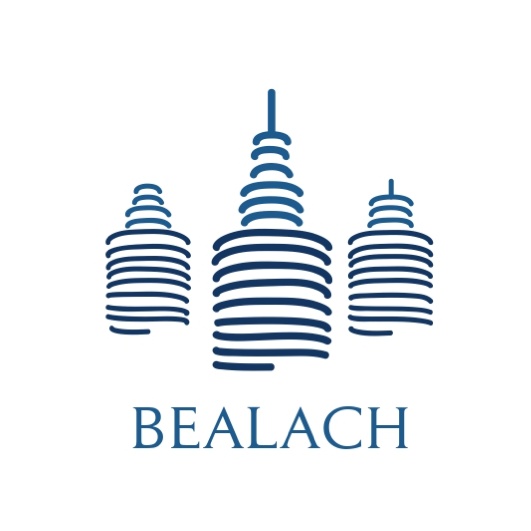

BEALACHNuestras líneas de negocio
- • Garantiza el éxito de tu emprendimiento, proyecto o negocio.
- • Te ayudamos a emprender tu negocio.
- • Realizamos el análisis de las diferentes etapas para que tu proyecto de inversión, emprendimiento o renovación de tu negocio sea exitoso.
Realizamos análisis de viabilidad económica, financiera y de riesgos para la toma de decisiones informadas sobre proyectos de inversión. Incluye proyecciones, evaluación de retorno y escenarios comparativos.
Evaluación Estratégica de Inversiones
En Bealach, aplicamos metodologías financieras avanzadas para respaldar decisiones de alto impacto. Desde la selección del terreno hasta el análisis de rentabilidad bajo escenarios inciertos, transformamos información en estrategia.
1. Selección de Localización
Evaluamos factores como accesibilidad, libertad operativa, imagen y potencial de crecimiento usando el método de Brown y Gibson.
2. Anualidad Equivalente
Convertimos los costos de inversión y renta a un valor equivalente anual, comparando alternativas de manera objetiva en el tiempo.
3. Análisis de Riesgo
Modelamos escenarios con árboles de decisión para estimar el valor esperado bajo distintas rutas posibles de acción.
4. Simulación Monte Carlo
Ejecutamos miles de escenarios con variables clave para medir probabilidad de éxito y robustez financiera del proyecto.
¿Quieres evaluar tu próximo proyecto con visión estratégica?
Contáctanos y recibe una asesoría confidencial adaptada a tus objetivos.
No toda casa es una buena inversión. Y no toda buena inversión parece atractiva al inicio.
La diferencia está en el análisis. En Bealach profesionalizamos la evaluación de proyectos inmobiliarios para que cada decisión se tome con información, visión financiera y estrategia patrimonial.
Tu patrimonio merece algo más que intuición.
Análisis de Mercado
Identificamos factores de oferta, demanda, competencia, ubicación y plusvalía para determinar el potencial real del proyecto.
Planeación Financiera
Analizamos costos, ingresos, financiamiento, rentabilidad y sensibilidad para construir escenarios financieros claros.
Viabilidad del Proyecto
Evaluamos infraestructura, normatividad, riesgos operativos y condiciones del desarrollo antes de comprometer capital.
Estrategia Comercial
Diseñamos estrategias de venta, posicionamiento y comercialización alineadas al perfil del desarrollo y del inversionista.
Porque tu casa también debe generar valor
Integramos análisis financiero, visión comercial y planeación patrimonial para ayudarte a distinguir entre una propiedad atractiva y una inversión verdaderamente viable.
Brindamos soluciones integrales para la:
loading...
servicios especializados
Auditoría en Proyectos Inmobiliarios
Controla tu inversión. Protege tu rentabilidad.
Una visión integrada de obra y finanzas
En Bealach, integramos avance físico de obra, estimaciones de contratistas y análisis financiero en una sola visión. Porque saber exactamente dónde está tu dinero no es un lujo: es la base de cualquier proyecto rentable.
- • Validación de recursos vs avance físico.
- • Auditoría de estimaciones y pagos.
- • Cruce de información financiera y ejecución real.
- • Detección temprana de desviaciones y sobrecostos.

Recursos vs avance físico
Validamos que cada peso invertido se traduzca en obra real y medible. Cruzamos partidas presupuestales con avances reportados en campo.
Auditoría de estimaciones
Revisamos volúmenes, conceptos y montos de cada estimación antes de ser autorizada para pago.
Alineación obra + finanzas
Integramos registros contables y ejecución real para generar una sola versión confiable de la información.
Beneficios para tu proyecto
- • Mayor control y transparencia financiera.
- • Reducción de sobrecostos y desviaciones.
- • Información confiable para inversionistas.
- • Protección de la rentabilidad del proyecto.
- • Identificación de riesgos financieros.
- • Detección de pagos sin respaldo real.
Nuestro proceso
1
Diagnóstico inicial
Levantamiento del estado de obra, contratos y situación financiera.
2
Verificación en campo
Visitas periódicas y validación de avances reales.
3
Análisis integrado
Cruce de información física, contractual y financiera.
4
Reporte ejecutivo
Entrega de hallazgos, riesgos y recomendaciones accionables.
¿Quieres proteger la rentabilidad de tu proyecto?
Solicita un diagnóstico inicial y obtén una visión clara del estado real de tu inversión inmobiliaria.
SERVICIO FISCAL Y CONTABLE
- • En el área fiscal y contable, contamos con el respaldo de la empresa de Consultoría Integral de negocios KMARGO líder en la implementación de servicios de consultoría a nivel nacional, con los más altos estándares de calidad.
- • La visión estratégica de KMARGO está destinada a la organización y aprovechamiento de los recursos humanos, permitiendo a las empresas laborar bajo un alto grado de efectividad y óptimos resultados incrementando su competitividad dentro del mercado.
Lo que nos distingue
-
Transparencia financiera
-
Tecnología vanguardia para la gestión administrativa y financiera.
-
Conciliación de diferencias en convivencia con comunicación personalizada
-
Eficiencia en los tiempos de atención al cliente